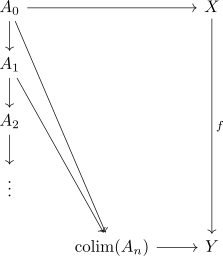
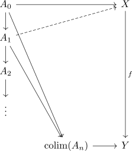

set with left lifting property closed under sequential colimits
Proposition
Let $\mathcal{C}$ be a category, $\mathcal{S} \subseteq \mathrm{Mor}(\mathcal{C})$ a subcollection of morphisms
\begin{align*}
\chi_{L}(\mathcal{S})
\end{align*}
the set of morphisms with the set with the left lifting property
Then $\chi_L(\mathcal{S})$ is a closed under sequential colimit, i.e.
\begin{align*}
A_0 \rightarrow \mathrm{colim}(A_n) \in \chi_{L}(\mathcal{S})
\end{align*}
Proof
Let $f: X $\rightarrow Y \in \mathcal{S}$ and $A_n \rightarrow A_{n+1} \in \chi_L(\mathcal{S})$
then consider
\begin{displaymath}
\begin{tikzcd}
A_0 \arrow[]{rdddd}{} \arrow[]{rr}{}\arrow[]{d}{} & & X \arrow[]{dddd}{f} \\
& & \\
& & \\
& & \\
& \mathrm{colim}(A_n) \arrow[]{r}{} & Y
\end{tikzcd}
\end{displaymath}By adding $A_n$ and the coprojections we get

and we can inductively lift

and apply the universal property of the colimit to get a lift
\begin{displaymath}
\begin{tikzcd}
A_0 \arrow[]{rdddd}{} \arrow[]{rr}{}\arrow[]{d}{} & & X \arrow[]{dddd}{f} \\
A_1 \arrow[dotted]{rru}{} \arrow[]{d}{} & & \\
A_2 \arrow[dotted]}{rruu}\arrow[]{d}{} & & \\
\vdots & & \\
& \mathrm{colim}(A_n) \arrow[dashed]{ruuuu}{} \arrow[]{r}{} & Y
\end{tikzcd}
\end{displaymath}